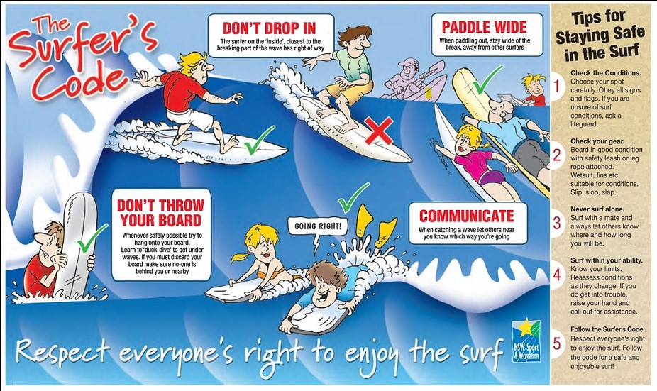

If you’re relatively new to the sport it’s important that you understand the surfing code of conduct.
Even if you’re a seasoned pro, it doesn’t do any harm to remember the rules.
Here are 3 important rules :
Rule 1. Do. Not. Drop. In. Ever.
This is the cardinal sin of surfing. Beginners often paddle and take waves without being aware there is someone else on the wave already.
The one closest to the breaking part of the wave or curl HAS priority.
Before you go, look left and right and look again and if there is someone on it, pull off, fall off or get out the way. Dropping in doesn’t just ruin
the ride for the surfer in question, it can also cause a crash and nothing pisses an experienced surfer off more than a beginner dinging his board.
No matter how apologetic you are.
Rule 2. Paddle the right way.
When paddling out to the line-up (where the other surfers are sitting) do NOT paddle in front of someone
riding a wave.
You must paddle behind them even if it means taking the hit of whitewater that follows.
Essentially don’t get in the way of someone surfing along a wave.
Rule 3. Do. Not. Ditch. Your. Board.
When it’s crowded always keep hold of your board.
Letting go of your board, especially if there is any wind, is likely to hit someone or even yourself.
When paddling out, if a wall of whitewater is coming either roll with the board, duck dive or hold on to it for dear life.
If someone is behind you and you let go and it hits them, well frankly you deserve to get what’s coming!
